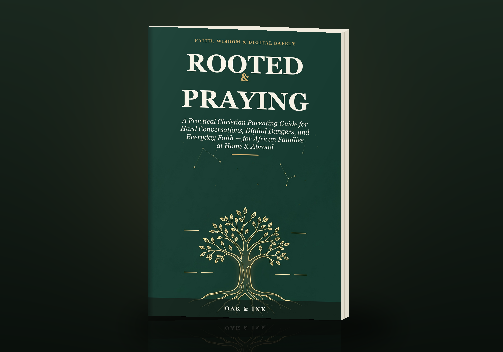

Fury v Joshua Fight Faces Objections Over 3am Finish - Check Below For Full Details

Residents have raised objections to Tyson Fury vs Anthony Joshua finishing at 03:00 GMT in Cardiff on 11 December, citing noise, safety and traffic. Cardiff Cou
The eagerly awaited Tyson Fury v Anthony Joshua heavyweight clash is set for Cardiff's Principality Stadium on 11 December - but residents have raised serious concerns over plans for the event to run into the early hours of the morning.
The all-British fight is expected to finish at 03:00 GMT the following day to align with prime-time viewing in the United States, prompting objections to the stadium's application to extend licensing hours.
What residents are objecting to
Cardiff Council has received several representations ahead of a licensing subcommittee meeting on 25 November, citing:
- Anti-social behaviour and public safety
- Noise and late-night disturbance continuing after the event ends
- Traffic congestion and road closures
- Impact on families with young children living near the stadium
One resident who lives directly opposite the stadium wrote that while they support the event, they want extra conditions including a dispersal plan with stewards in place until crowds clear, no amplified music outside the stadium after midnight, and street cleaning completed by 08:00 on 12 December.
Three others called for the application to be rejected outright, arguing that music, amplified sound, large crowds, shouting, vehicles and taxis could keep disturbance going well into the early morning. A parent with young children said a 03:30 finish would "cause absolute chaos" and leave the household with "exhausted, stressed children."
The stadium's request
The Principality Stadium normally operates a curfew until 01:00 when the roof is closed. It has now requested permission for licensed activities - including the sale of alcohol and the playing of music - to continue until 03:00 on 12 December, with the venue remaining open until 03:30.
Supporters and the business case
Not everyone is opposed. Some residents wrote in support, arguing the fight would bring a significant economic boost and attract tourists, particularly from the United States, to Cardiff. Pub owner Mike Catris described having the fight in the city as "overwhelmingly positive," calling any disruption "a small price to pay" for the money it generates for a struggling economy.
Why Cardiff and not Wembley or New York
Several venues were considered, including New York's Madison Square Garden. Focus shifted to the UK after Anthony Joshua and promoter Eddie Hearn refused to budge on their contractual right to stage the fight on British soil. Wembley Stadium was touted, but its strict 23:00 event curfew proved a problem given Netflix's preference to broadcast during US prime time. Cardiff was chosen partly because the venue already has precedent for late-night boxing - Joe Calzaghe's 2007 super-middleweight unification win over Mikkel Kessler did not start until 02:00 local time to satisfy US network Showtime.
The application has been made under the Licensing Act 2003, with a 28-day consultation period. If objections are received, the council's licensing sub-committee must hear them and may modify the licence conditions or reject the application. The Principality Stadium has been asked to comment.

Rooted & Praying — The Christian Parenting Guide for the Digital Age
Scripture, prayer and calm answers for 18 digital-age parenting situations — now with a launch discount.
View the Book →Related Articles
Arsenal vs Borussia Dortmund LIVE: UEFA Champions League
How CAS Overturned CAF’s Decision And Restored Senegal’s AFCON Title